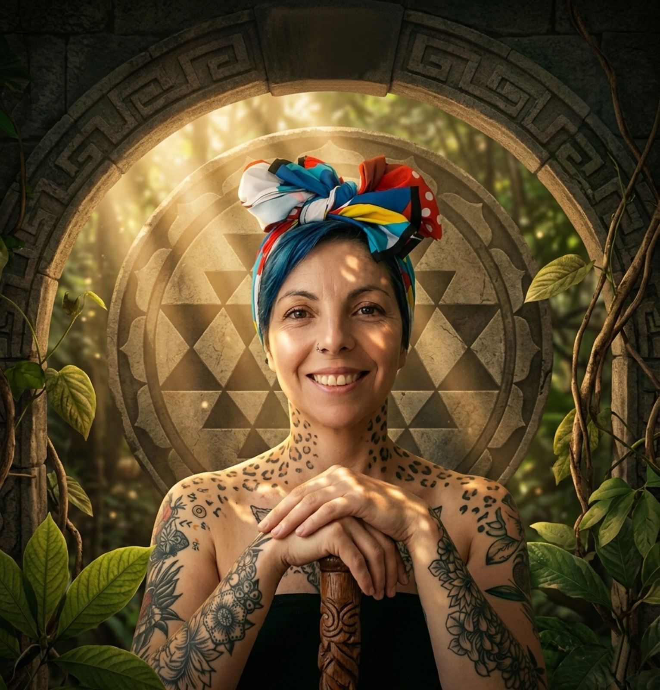

Arquitecta de Mundos Interiores & Alquimista Organizacional
Donde el mundo agota,
yo regenero.
Transformo el peso del agotamiento en la levedad del ser. A través del arte, la geometría sagrada y la sabiduría de la tierra, acompaño a personas y organizaciones a recuperar su lugar seguro: visión clara, estructura sólida y un caminar liviano.

+16 años
tejiendo arte, naturaleza y transformación humana